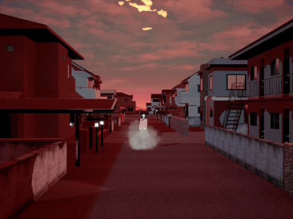
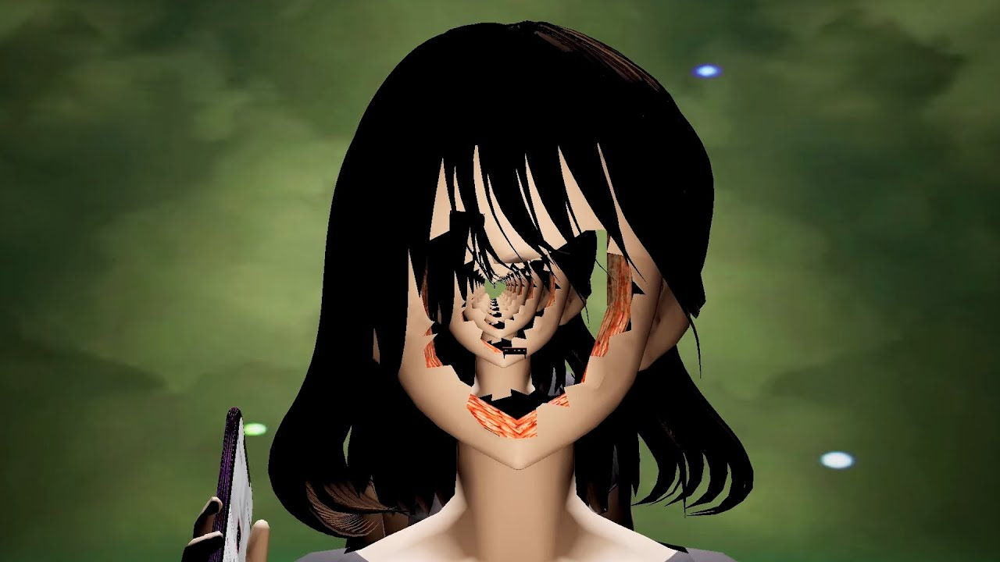
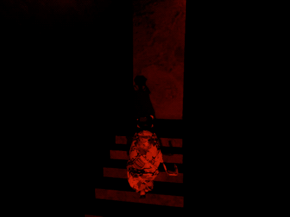
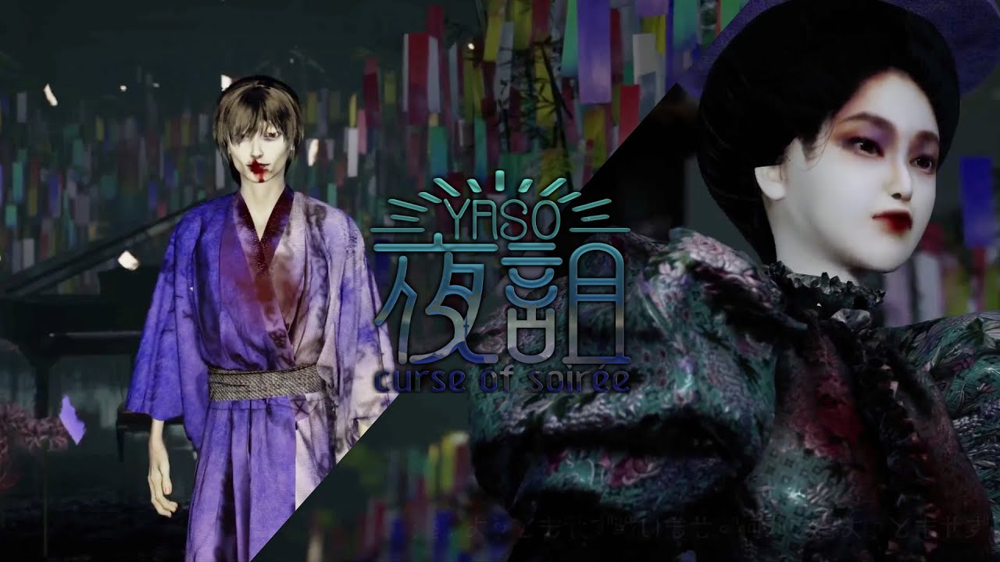
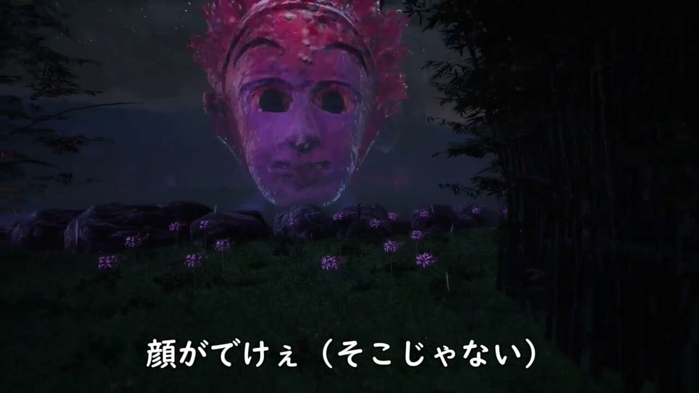

Suzuka Ichimatsu is the indie developer of both Go Home and YASO (the prequel to Go Home). The product of surrealism and horror, with the addition of some humor here and there. The plot is that you're a young girl being both haunted and chased around by evil spirits on your way home after visiting a shrine; while the prequel revolves around telling the backstory of one of the spirits in Go Home. This game is also filled to the brim with easter eggs so if you were to play, be on the lookout. Ichimatsu also makes music on the side and posts it on her Youtube(which I'll alos be linking to).The prequel for Go Home was just released this year after being delayed due to the pandemic.
    